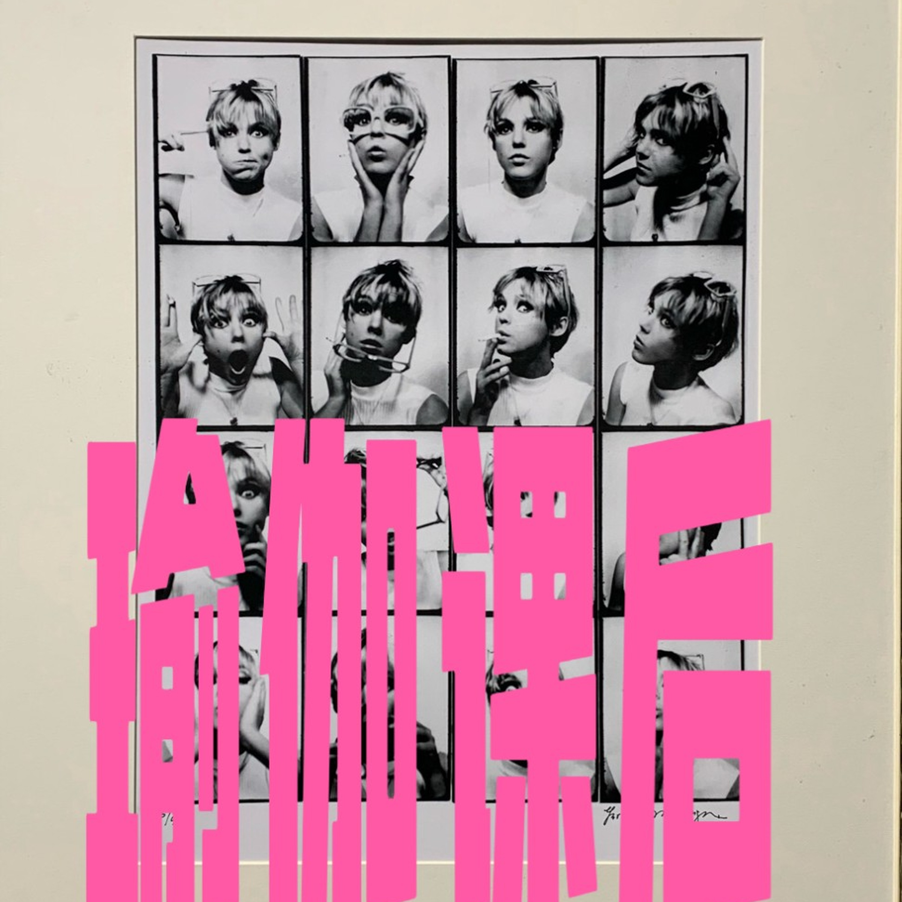

瑜伽课后
瑜伽课后：个人知识播客，聊职场、生活与向内的选择。
订阅 RSS：feed.xml（可粘贴到小宇宙搜索栏）
EP 03.从神经网络到 AGI：Dario Amodei 眼中的 AI 未来——访谈精讲
透过AI播客学英文课第二期。按飞书精讲重录：Dario Amodei 谈 scaling law、外推到 human level，以及把安全写成和能力同一张工程清单。
EP 02.Anthropic 产品团队如何做到比别人快？—— Cat Wu 访谈精讲
透过AI播客学英文课第一期。Cat Wu 谈 AGI pilled、product taste，以及 Anthropic 如何把交付从六个月压到一天。
内心确信，才是职业选择的底层逻辑
性格与环境错位、信念如何左右选择、岗位抓手缺失，以及两套向内锚定方向的工具。